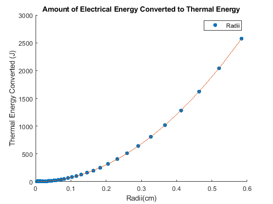

%I propose to solve the problem of determining how much electrical energy %is converted into thermal energy inside a variety of wire sizes under a %certain time period. The reason why this problem interests me is that %I'm fascinated by energy conversion and the idea of using it to create a %more sustainable and practical world. In energy conversion, the variables %needed are current density, radius of the wire, potential, and time. The %main physical principle in this problem is energy conversion. The %function needed for this program to operate correctly is an equation that %can pull and use at least one input value from a table and then %correctly calculate the equation. The vector quantity in this problem %would be the current density. I will read in a data table that has many %difference radii values of wires and I will have to pull each one into %the formula. I can visualize this problem through a graph of energy %converted vs radius. %Parameters current_density = 10.0; voltage = 2; % volts time = 120.0; % sec %Pulls table from website wire_gauges_table = readtable('wireGauges.txt'); %Pulls column from table and coverts it to an array diameter_mm = table2array(wire_gauges_table(:,3)); %Finds radius radii_mm = diameter_mm./2; %Converts radii to from mm to cm radii_cm = radii_mm./10; %Equation to find current %i = int(J*dA) %i = int(J*2*pi*r) %i = J*2*pi*int(r) %i = J*2*pi*((r^2)/2) %i = [(J*2*pi)/2]*(r^2) %Finding the constant value %The constant = (J*2*pi)/2 constant = (current_density * 2 * pi)/ 2; %Creates matrix of radii^2 radii_squared = radii_cm.^2; %Creates matrix of current values current = constant.* radii_squared; %Creates matrix of energy values %energy converted = voltage * time * current energy = (voltage*time).*current; %creates graph hold on scatter(radii_cm, energy,'filled') plot(radii_cm,energy) hold off xlabel('Radii(cm)') ylabel('Thermal Energy Converted (J)') title("Amount of Electrical Energy Converted to Thermal Energy") legend("Radii")